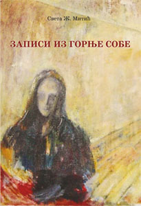
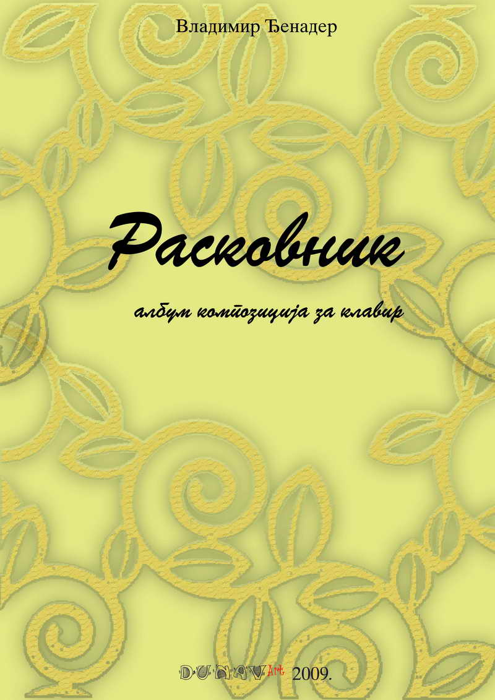

Udruženje Dunav Art
Udruženje Dunav Art, sa širokim spektrom delovanja u celoj republici i tendencijom ka internacionalnom širenju, nastoji da se aktivno uključuje u kulturni život Velikog Gradišta, promovišući savremene vrednosti u kulturi i umetnosti. Naši (ne isključivo muzički) projekti uspevaju da okupe grupe kreativnih, pretežno mladih ljudi. Ove godine smo, pored 8. Revije muzičkih talenata, u saradnji sa Kulturnim centrom ostvarili muzičko-poetski projekat „U potrazi za dušom“, angažujući veliki broj izvođača i saradnika sa strane i iz lokalnog kulturnog miljea.
Organizovanje majstorskog kursa violine u Beogradu čuvene Tatjane Balašove (januar 2014. Godine), violinskog pedagoga sa Moskovskog konzervatorijuma, kao i izdavanje niza muzičkih izdanja i knjiga (Sveta Mitić: Misli iz gornje sobe), učvrstili su nas u uverenju da Udruženje Dunav Art opravdava rad i svrhu postojanja. Ove godine (februar 2015.) izvodili smo multimedijalno delo autora Vladimira Đenadera „CHRONOS“ za grupu muzičara, glumca i audio i video trake u SKC –u u Beogradu i u Kulturnom centru u Ubu.
Revija muzičkih talenata u Velikom Gradištu tradicionalno okuplja mlade muzičare iz cele Srbije koji prezentuju svoje sviračko umeće u prelepoj sali opštine. Naravno, sve se dešava uz pomoć i podršku institucija i pojedinaca iz Velikog Gradišta, a naročito treba istaći Srednju školu koja ustupa prostor za pripreme takmičara. Ove godine nastupilo je 25 mladih muzičara podeljenih u dve kategorije: osnovna i srednja muzička škola. Pokazali su zavidan nivo muziciranja, a publika je sa zanimanjem pratila muziciranje na različitim instrumentima. Čuli smo kandidate na klaviru, violini, harmonici, klarinetu, gitari i nekoliko mladih talentovanih pevača.
Revija muzičkih talenata
Već osam godina za redom u Velikom Gradištu se održava manifestacija „Revija muzičkih talenata“, pod pokroviteljstvom Opštine, u organizaciji našeg Udruženja Dunav art iz Velikog Gradišta. U subotu 13. juna 2015. godine nastupili su mladi muzički talenata iz cele Srbije, pokazujući zavidan nivo muziciranja. Revija se odvijala u Svečanoj sali Opštine Veliko Gradište, a priprema takmičara u Srednjoj školi koja je, kao i uvek do sada, širom otvorila vrata za mlade muzičke talente.
Žiri u sastavu: Dušica Sekulić Stojković, profesor violine, Miodrag Krstić, magistar harmonike i predsednik žirija Vladimir Đenader, kompozitor i profesor klavira, odlučio je da se dodeli pehar i nekoliko specijalnih nagrada učesnicima Revije, a da se svim ostalim učesnicima dodele diplome i okvir nagrade (prva, druga i treća), kako bi se zadržao duh revijalnog nastupanja i muziciranja.
Dobitnici:
| Jana Stojković | laureat 8. Revije i dobitnik pehara |
|---|---|
| Aleksandra Latinović | specijalna nagrada u visini 5.000 dinara |
| Darijan Makijev | komplet diskova (opera Umberta Giordana „Andrea Chenier“) |
| Pavle Stojković | notno izdanje „Dunav Art“ |
| Filip Simanić | notno izdanje za harmoniku |
| Ana Popović | CD (pijanista Dubravka Jovičić) |
| Aleksa Kovačević | komplet žica za gitaru |
Pokrovitelj ove, kao i svih dosadašnjih Revija muzičkih talenata bila je opština Veliko Gradište, omogućivši da se deca - učesnici osećaju prijatno i da imaju dobre uslove za muziciranje. Upoznavanje prirodnih lepota Podunavlja i turističke ponude Velikog Gradišta bila nam je snažna motivacija u angažmanu oko propagiranja i organizovanja ove manifestacije. BILTEN REVIJE 2015
Kao i prethodnih godina, uz tradicionalnu Reviju muzičkih talenata učestvovalo i pomoglo ostvarivanje još jednog umetničkog projekta – večeri posvećene nedavno preminulom gradištanskom umetniku Sveti Ž. Mitiću.BILTEN4 REVIJE 2014
Šesta po redu Revija muzičkih talenata održana je u Velikom Gradištu, u perioduod 14. do 15. juna, u organizaciji Udruženja “Dunav Art”, a uz podršku Opštine Veliko Gradište i brojnih prijatelja festivala. Više o šestoj reviji možete pročitati u BILTENU REVIJE 2013
Peta Revija muzičkih talenata Srbije održana je 16. juna 2012. godine. Po lepom vremenu, u već ustaljenom terminu, naši mladi muzičari pristigli iz Šapca, Beograda, Uba, Grocke, da prezentuju svoj umetnički nivo i naučeni program. Srednja škola im je pružila gostoprimstvo otvorivši širom vrata svojih prostorija i učionica za pripremu učesnika, odmor ili usviravanje (zagrevanje).BILTEN REVIJE 2012
Četvrta Revija talenata je održana u Junu 2011 godine na otvorenom prostoru BILTEN REVIJE 2011
U subotu, 12. juna 2010. godine, održana je treća Revija muzičkih talenata u Velikom Gradištu. Prema prvobitnoj zamisli inicijatora i organizatora udruženja „Dunav art“ BILTEN REVIJE 2010
Veče sećanja na pesnika i umetnika Svetu Ž. Mitića iz Velikog Gradišta
U POTRAZI ZA DUŠOM
Multimedijalni projekat na stihove pesnika Srboljuba Mitića
iz zbirke pesama Čerga na utrini
Opština Veliko Gradište je u okviru svojih umetničkih programa odobrila i finansirala odličan multimedijalni projekat koji je izazvao veliku pažnju i naišao na odličan projem publike. U takozvanom Silosu, nekada umetničkom ateljeu slikara i pisca Svete Ž. Mitića, kompozitor i pijanista, i slobodno možemo da kažemo multimedijalni umetnik Vladimir Đenader, osmislio je multimedijalno umetničko veče. Ovaj projekat-instalacija zasniva se na postmodernističkom sjedinjavanju muzike, poezije, slikarstva i pantomime sa govornim dijalozima. Izuzetno interesantna umetnička instalacija koristi elemente klasičnog i modernog, arhetipskog i postmodernističkog u integralnom sagledavanju i novom čitanju i doživljavanju stvaralaštva pesnika Srboljuba Mitića.
Bacanje karata
Vladimir Đenader je odabrao osam Mitićevih pesama koje su ga inspiraisale i pokrenule da ih muzički nadogradi. Uz saradnju recitatora i glumaca koji su pantomimski učestvovali u projektu, pratili smo priču pesnika Srboljuba Mitića i kompozitora Vladimira Đenadera.
Projekat se sastoji od Introdukcije na tekst pesme Žuta Tica gde se izlaže osnovni motiv koji se provlači na različite načine kroz sve pesme. Slede pesme koje čujemo prvi put u interpretaciji recitatora a zatim u muzičkoj transpoziciji. To su zapravo solo pesme slobodnog i nekonvencionalnog izraza, u isti mah moderne i tradicionalne sa snažnom nacionalnom potkom koja se oseća u svakom motivu. Posebno snažan utisak na sve prisutne ostavila je pesma Imam zelenog kera koja dubinom osećanja i savršenom muzičkom transpozicijom i nadogradnjom, pravo malo remek-delo.
organizaciji i realizaciji ovog projekta učestvovali su izvođači: Teuta Aslani Đurđević - sopran i flauta, Katarina Lugo Ordaz – violina i vokal, Dalida Grmuša – klavir, Novica Stokić – recitator i glumci Miodrag Ilić i Marina Milićević. Reditelj projekta Teuta Aslani.
Na kraju, iz veliko odobravanje publike koja je odlično prihvatila projekat i umetnike koji su učestvovali, možemo da zaključimo da je ovo bilo uzuzetno uspelo umetničko veče koje zaslužuje veliku pažnju umetničke javnosti. Nadamo se ponovnom susretu sa ovim odličnim umetnicima.
Prof. Mr Nebojša Todorović,
muzikolog i muzički kritičar, prof. Fakulteta umetnosti u Nišu.
Dunav Art projekti
Knjiga prvenac likovnog umetnika Svete Ž. Mitića iz Velikog Gradišta. Promocija knjige je održana 23. avgusta u Golupcu ("SPORT ROCK CAFFE"), krajem decembra 2013 u rodnom selu umetnika Bariču, i 11. aprila 2014. u Ubu, kao deo umetničkih programa 12. Internacionalnog festivala Muzičke škole. Planirana promocija u Velikom Gradištu, na žalost, nije održana zbog prerane i iznenadne smrti autora. Sam kao da je naslutio.

MEMENTO
Četiri dana nakon ubske promocije knjige, Sveta Mitić iznenada je preminuo u snu. U svojim Zapisima, kao da je naslutio skoru smrt: "San. Među bezbroj krstova tražio sam svoj. Nije ga bilo. Znam, duboko sam uveren da je tu i da ću ga uskoro naći".
U septembru 2009. godine je, uz pomoć i pokroviteljstvo udruženja Dunav Art, izašao “RASKOVNIK”, album kompozicija za klavir solo autora kompozitora Vladimira Đenadera.

Gradište koje nestaje - projekat slikara Svete Ž. Mitića (rođen 1955. član ULUS-a, izlagao na mnogim izložbama u zemlji i inostranstvu) je hommage gradu koji ima svoju istoriju, životni ritam, specifičnost i koji leži na dve reke, Pek i Dunav, sa položajem graničnog mesta prema susednoj Rumuniji.
Draž Velikom Gradištu su oduvek davale mnogobrojne kafane, koje su neka vrsta oaze slobode, jednakosti i demokratije. Samo tu je moguće za istim stolom sresti umetnike, profesore, zanatlije, doktore i trgovce.
Prostor u kojem se nalazi kafana "Lipov lad" je predviđen za rušenje.